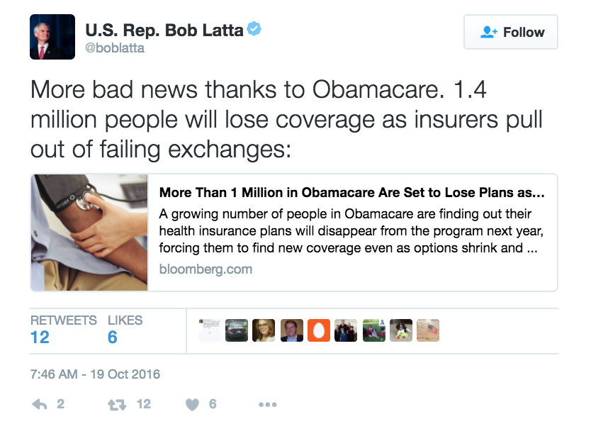
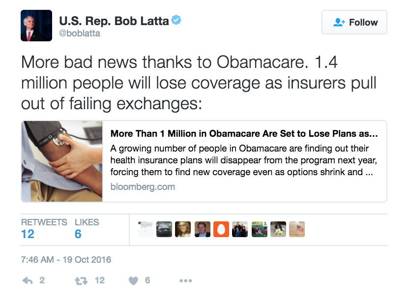
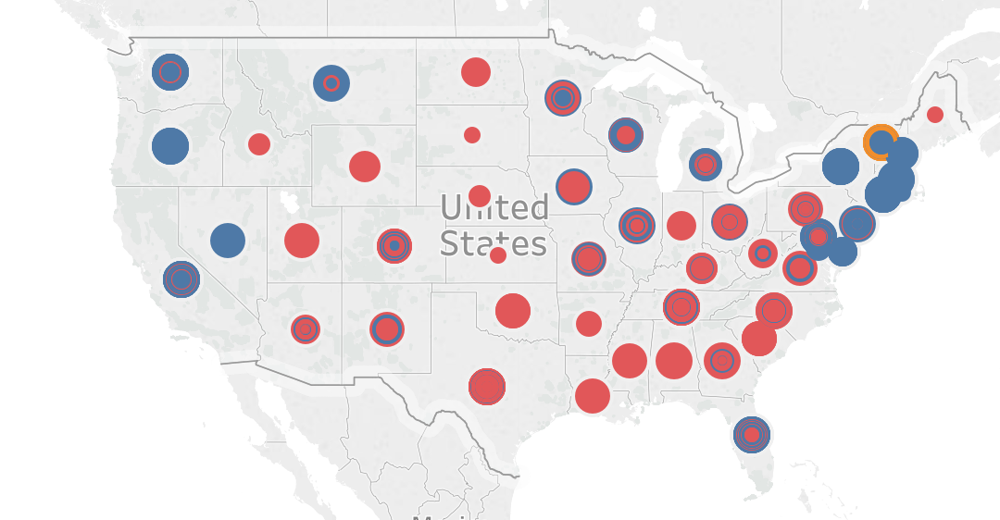

Use of the term ObamaCare versus ACA
Since 2009 we found over 8,000 tweets mentioning ACA or ObamaCare. Given the confusion over whether or not these are the same thing, we setout to understand how the different parties were talking about the two policies. Not surprisingly, we overwhelmingly found that Democrats tweet about "ACA" or "Affordable Care Act", while Republicans tweet about ObamaCare.


Sentiments while Tweeting

We analyzed the sentiments of the text that congresspeople were tweeting out. While we noticed that most of the tweets are neutral, we generally found that people tend to tweet while they are angry, which resulted in a lower sentiment score. Additionally, we found that there are similar sentiment patterns between Republicans and Democrats.
Immigration
Looking at the volume of immigration tweets over time by party, we can see that they follow 1 of 2 patterns: either the volume of Democrat and Republican tweets peaks at the same time, or Democrats peak while Republicans dip. Examining these peaks gives us insight into starkly disparate party views on immigration.
Planned Parenthood

Planned parenthood has been a hot topic over the last three years, with a ton of mis information on both sides of the aisle. Given how many Democrats talk about women's health and planned parenthood funding, we hypothesized that democrats would tweet about Planned Parenthood alot. However, we were surprised to find that it was, in fact, republicans who tweet at 1.5X the rate of democrats on planned parenthood.